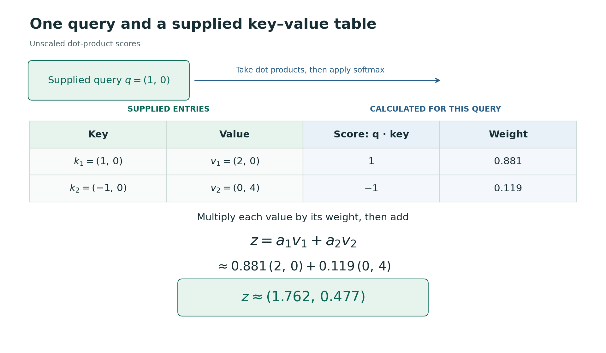
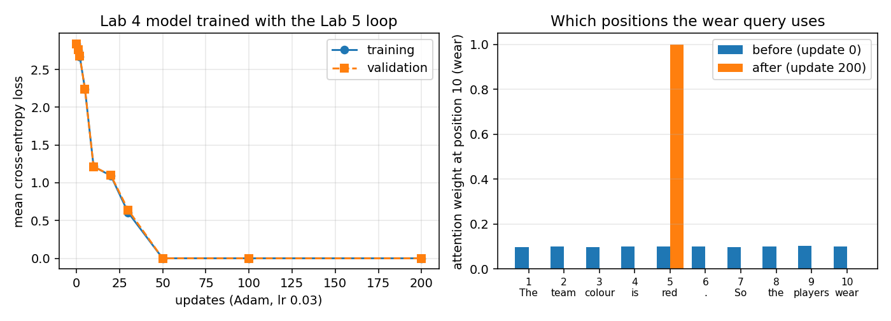
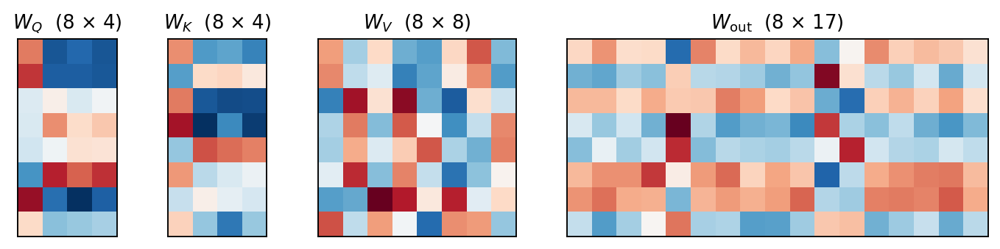

15 Attention
15.1 Attention as similarity-based soft lookup
In L7 we used a query to combine information from a supplied table of keys and values. Comparing the query with each key gives scores, which we convert into non-negative weights summing to one. We then take the weighted average of the associated values. This is a soft lookup: we combine entries using continuous weights rather than select a single entry.
15.1.1 One query and a supplied table
To understand how this combination works, we first consider a single query and a supplied table of keys and values. Here the numbers are chosen for simplicity and convenience but are otherwise arbitrary.
Suppose our query is \(q=(1,0)^T\), and our table contains two entries:
| Entry | Key | Value |
|---|---|---|
| 1 | \(k_1=(1,0)^T\) | \(v_1=(2,0)^T\) |
| 2 | \(k_2=(-1,0)^T\) | \(v_2=(0,4)^T\) |
The keys and the query have the same number of components so that we can take their dot products.
First, we calculate a comparison score for each key:
\[ s_j=q^T k_j. \]
For these vectors, \(s_1=1\) and \(s_2=-1\). A dot product depends on both the lengths of the vectors and how they are aligned. Here the two keys have equal length, and the query points in the same direction as the first key and the opposite direction to the second.
We want larger scores to give larger weights, with non-negative weights that sum to one. A standard way to do this is the softmax operation:
\[ a_j=\frac{\exp(s_j)}{\sum_\ell\exp(s_\ell)}. \]
Exponentiating gives positive numbers, and dividing by their sum makes the weights sum to one. In this example,
\[ a_1=\frac{e^1}{e^1+e^{-1}}\approx0.881, \qquad a_2=\frac{e^{-1}}{e^1+e^{-1}}\approx0.119. \]
Finally, we form the weighted average of the values. This query-dependent combination is often called a context vector, which we denote by \(z\):
\[ z=a_1v_1+a_2v_2 \approx0.881\begin{pmatrix}2\\0\end{pmatrix} +0.119\begin{pmatrix}0\\4\end{pmatrix} \approx\begin{pmatrix}1.762\\0.477\end{pmatrix}. \]

In a language model, the query and the table of keys and values are built from the text.
15.1.2 The calculation in code
We can carry out the same calculation using PyTorch tensors. Each row of keys is a key vector, and the matching row of values contains its associated value:
import torch
query = torch.tensor([1.0, 0.0])
keys = torch.tensor([[1.0, 0.0], [-1.0, 0.0]])
values = torch.tensor([[2.0, 0.0], [0.0, 4.0]])
# One dot product for each key.
scores = keys @ query
# Softmax: exponentiate, then divide by the sum.
weights = torch.exp(scores)
weights = weights / weights.sum()
# Show the contribution from each value explicitly.
z = weights[0] * values[0] + weights[1] * values[1]
print(scores)
print(weights)
print(z)This gives
tensor([ 1., -1.])
tensor([0.8808, 0.1192])
tensor([1.7616, 0.4768])The matrix–vector product keys @ query calculates the dot product of each key row with the query. Once we have checked the individual contributions, we can also write the last calculation as z = weights @ values.
If we change the query to \((0,0)^T\), both scores become zero. The weights are then \(1/2\) and \(1/2\), giving the ordinary average \(z=(1,2)^T\). If we instead use \(q=(-1,0)^T\), the weights reverse and the second value makes the larger contribution: we get a different context vector depending on the query, even for fixed keys and values.
We can also change a value without changing its key. For example, replacing \(v_1\) by \((3,2)^T\) leaves the scores and weights unchanged for our original query, but changes the resulting \(z\). Changing a value changes what that entry contributes without changing how strongly it is selected.
15.1.3 Connection to nearest neighbours and smoothing
This has the same basic structure as our original nearest-neighbour example: compare a new input with the stored inputs, then combine the associated outputs. Rather than taking one or two nearest entries, we have given each entry a weight determined by its comparison with the query.
In kernel smoothing, a non-negative function measures how strongly a stored input should contribute at a query location. We normalise these weights and combine the corresponding values. Our calculation has this form, using \(\exp(q^T k_j)\) as the weighting function. The word smoothing describes the weighted-average calculation here; the entries need not be nearby times or neighbouring words.
The dot product is also what remains of a Gaussian kernel. A kernel smoother weights entry \(j\) by \(\exp(-\tfrac12\|q-k_j\|^2)\), and expanding the square gives
\[ -\tfrac12\|q-k_j\|^2=q^Tk_j-\tfrac12\|k_j\|^2-\tfrac12\|q\|^2. \]
The last term is the same for every entry, so it cancels when the weights are normalised, and if the keys all have about the same length the middle term is nearly constant too. What is left is the dot product (Zhang et al. 2023, Section 11.3.1).
In nearest-neighbour regression, the values were observed outputs and their weighted average was our prediction. Here, we multiply each input token’s embedding by a matrix, introduced in the next section, to form its value vector. We take a weighted average of these value vectors to form the context vector. A further calculation produces scores for possible next tokens, which softmax converts into probabilities.
In early neural translation models, recurrent networks summarised the input sentence in one vector, as we discussed earlier. Adding attention let the model keep a vector for each input word and form a different weighted average for each word of the translation.
15.2 Building the table of keys and values from the text
The task throughout this chapter is colour recall on short texts written for the lab. Each states a team colour, The team colour is C. with C one of red, blue and black; may add The game is starting. or The players are on court. or both; and ends So the players wear. The next token, the target, is the stated colour. The tokens are the words and punctuation marks of these texts, seventeen in all, which keeps the model small enough to inspect, and the answer is always in the text, so one attention layer can do the task.
We return to the colour-recall problem, with the prefix
The team colour is red. So the players wear
and the next-token target red. We describe a text by positions: a position is a numbered place in the sequence holding one token, and the same token can occur at several positions. Position 10 is the tenth token of this prefix; in a longer prefix, wear sits at a later position. Treating words and punctuation as tokens, the prefix has ten positions:
The | team | colour | is | red | . | So | the | players | wearFor the prediction at the last position of the prefix, position 10, which holds wear, we want to form a context vector using the positions available to it: itself and the earlier ones. Position 10 supplies the query, and each available position, including position 10, supplies a key for the comparison and a value to contribute to the prediction. Comparing the query with the keys determines the weights for combining the values. The lookup calculation is the same as before, but we now calculate its query and table from the text.
15.2.1 Computing queries, keys and values
The key at a position is what the query is compared with, and the value is what that position contributes to the context vector. We calculate keys and values from the embedding rows using weight matrices \(W_K\) and \(W_V\), and the query from the current position’s embedding using a third matrix, \(W_Q\). We use the same three matrices at every position. Their entries are model parameters: numbers adjusted during training. One set of \(W_Q\), \(W_K\) and \(W_V\) is called an attention head.
Stack the embedding rows of one sequence, one per position, into a matrix \(X\): ten rows for the ten-token prefix. Each training prefix gives its own \(X\), and later in the chapter one recorded sentence gives one \(X\) with a prediction at every position. Because the inputs are rows, we multiply by the weight matrices on the right:
\[ Q=XW_Q,\qquad K=XW_K,\qquad V=XW_V. \]
The corresponding rows of \(Q\), \(K\) and \(V\) are that position’s query, key and value. If the embeddings have \(d\) components, the queries and keys \(d_k\) components and the values \(d_v\), then \(W_Q\) and \(W_K\) have shape \(d\times d_k\) and \(W_V\) has shape \(d\times d_v\).
The model from Lab 4 starts with random numbers in the embedding table and the three matrices: eight-component embeddings, four-component queries and keys, and eight-component values. An output layer then maps the context vector to a score for each of the seventeen tokens in its vocabulary, and softmax turns the scores into probabilities; Lab 4 shows this layer in full. Its attention weights at position 10 are close to \(0.1\) at every position, and the probability it gives red is about \(0.058\), close to \(1/17\). At this stage the output layer gets nothing useful from the context vector that would help predict red over the other tokens.
15.2.2 The training objective
For this task, a useful table has to do two things. The key at the position holding the stated colour should match the query from wear, whichever colour is stated, so that this position receives most of the weight. The value at that position should carry which colour was stated.
Training is not given these two requirements. Each training example supplies a prefix and its next token, and the only measure of the model is the negative log-likelihood loss from our digit classifier: the negative log of the probability the model gives to the target,
\[ L=-\log p_{\text{target}}, \]
averaged over the examples. No target attention pattern is supplied. The loss falls when the model gives the stated colour a higher probability, and the keys, values and attention weights change through updates that lower it.
15.2.3 Training the model
Suppose model is Lab 4’s PyTorch attention model and training_examples contains pairs of input-token ID tensors and one-element target ID tensors. The model returns an output-score vector and an attention-weight matrix. Here F denotes torch.nn.functional. The training loop is the one from our digit classifier in 205:
import torch
import torch.nn.functional as F
optimiser = torch.optim.Adam(model.parameters(), lr=0.03)
for update in range(200):
optimiser.zero_grad()
example_losses = []
for token_ids, target in training_examples:
logits, weights = model(token_ids)
example_loss = F.cross_entropy(logits[None, :], target)
example_losses.append(example_loss)
loss = torch.stack(example_losses).mean()
loss.backward()
optimiser.step()logits[None, :] supplies the batch dimension expected by the loss function: one example with seventeen output scores. F.cross_entropy calculates the log-softmax and selects the target’s negative log probability, which is the loss above. The loop averages the losses over the training examples before each update. zero_grad() clears previously accumulated gradients; backward() calculates the new gradients; and step() changes the model weights. Adam (adaptive moment estimation) is the method used here to turn gradients into updates. It is slightly more sophisticated than plain gradient descent: it sets a step size for each parameter from the gradients it has seen, and the learning rate lr sets the overall scale.
The training examples are nine prefixes: each of the three colours, with no inserted sentence, with The game is starting. inserted, or with The players are on court. inserted before So the players wear. We keep aside three prefixes, with both sentences inserted, and their next tokens for validation; they are not used for the updates. In every prefix the colour is at position 5; wear is at position 10, 15 or 16 in the training prefixes and at 21 in the validation prefixes, so the validation prefixes test the learned rule at a length, and a distance from the colour, that training never contained. Running the loop for 200 updates from its random starting values gives the following, where the first two columns describe the attention row at position 10 for the first training prefix, The team colour is red. So the players wear:
| Update | Weight on position 5 | Largest other weight | \(p_{\texttt{red}}\) | Predicted token | Training loss | Validation loss | Validation correct |
|---|---|---|---|---|---|---|---|
| 0 | \(0.099\) | \(0.103\) | \(0.058\) | . |
\(2.837\) | \(2.836\) | 0 of 3 |
| 10 | \(0.079\) | \(0.160\) | \(0.279\) | blue |
\(1.215\) | \(1.214\) | 1 of 3 |
| 30 | \(0.717\) | \(0.085\) | \(0.580\) | red |
\(0.607\) | \(0.641\) | 3 of 3 |
| 50 | \(1.000\) | \(0.000\) | \(1.000\) | red |
\(0.000\) | \(0.000\) | 3 of 3 |
| 200 | \(1.000\) | \(0.000\) | \(1.000\) | red |
\(0.000\) | \(0.000\) | 3 of 3 |

Before training, position 10 gives every position nearly the same weight and the three colours nearly the same probability. Around update 10 the weight moves onto other positions, and the model predicts blue for our prefix. By update 30 most of the weight is on position 5, and by update 50 all of it is, to three decimals. The trained model uses the colour position and nothing else: for the black prefix, the trained row also puts all of its weight on position 5 and gives black probability \(1.000\). On the three validation prefixes it predicted the before training and the correct colour after. The validation loss follows the training loss throughout. The same key at the colour position matches the wear query at any distance, because keys and queries are computed from the token alone; that is why the rule carries over to the longer prefixes, and also why this model cannot use where a token is.
Its matrices are not readable directly: \(W_K\) is \(8\times4\) with entries between about \(-1.5\) and \(1.2\), and the others are similar. What they do at each position can still be read off, as the next section shows.

15.3 What the learned weights do
For the red and black prefixes after 200 updates, the row at wear is:
| Prefix | Position \(j\) | Score of the wear query against the key at \(j\) (\(q_{10}\cdot k_j/2\)) |
Attention weight on \(j\) | What the value at \(j\) adds to the colour scores (weight \(\times\) value \(\times W_{\text{out}}\)) |
|---|---|---|---|---|
The team colour is red. So the players wear |
5, red |
\(39.9\) | \(1.000\) | red \(+24.3\), black \(+7.7\), blue \(+5.2\) |
The team colour is black. So the players wear |
5, black |
\(45.5\) | \(1.000\) | black \(+11.9\), red \(-4.2\), blue \(-3.1\) |
| either | every other position | about \(-12\) | \(0.000\) | nothing |
Only the key at the stated colour matches the wear query, and that position’s value raises the stated colour’s score most.
15.4 Attention at every position
Training text supplies many next-token targets: after The comes team, after The team comes colour, and after the prefix ending in wear comes red. We therefore want a context vector at each position so that we can calculate these predictions in one go.
Each position supplies its own query and receives its own context vector, an updated representation of its token that combines information from the positions it can see. When the queries, keys and values come from the same sequence, we call the operation self-attention. Lab 4 computes all ten rows and plots the weights before and after masking. Matrix multiplication lets us calculate all the comparisons and combinations together.
15.4.1 All comparison scores and context rows
Let \(T\) be the number of input positions and \(d_k\) the number of components in each query and key. The comparison-score matrix used in transformer attention is
\[ S=\frac{QK^T}{\sqrt{d_k}}. \]
The entry \(S_{ij}\) compares the query at position \(i\) with the key at position \(j\): rows are queries and columns are keys. The scaling keeps the size of the scores from growing with the width: if the components of a query and a key are independent with zero mean and unit variance, their dot product has variance \(d_k\), and dividing by \(\sqrt{d_k}\) brings it back to \(1\) (Vaswani et al. 2017; Zhang et al. 2023, Section 11.3.1). In Lab 4’s model, with four-component queries and keys, the scores are divided by \(2\).
Apply softmax separately to each row of \(S\) to form the attention-weight matrix \(A\). Each row contains non-negative weights summing to one. Matrix multiplication then gives all the context vectors:
\[ Z=AV,\qquad z_i=\sum_{j=1}^{T}A_{ij}v_j. \]
For the ten-token prefix, row 10 of \(Z\) is the context vector at wear that the training run scored. As written, every row uses every column, which the next section restricts.
The five shapes in Lab 4’s model, with \(T\) input positions, are:
| Matrix | Meaning | Shape |
|---|---|---|
| \(X\) | Embedding rows | \(T\times8\) |
| \(Q\), \(K\) | Query and key rows | \(T\times4\) |
| \(V\) | Value rows | \(T\times8\) |
| \(S\), \(A\) | Scores and attention weights | \(T\times T\) |
| \(Z\) | Context rows | \(T\times8\) |
A language model uses a full-vocabulary output head to turn each context row into probabilities for the following token; Lab 4’s head has seventeen columns, one per vocabulary token.
15.5 Causality
When predicting the next token after position \(i\), the model can use tokens up to and including \(i\). We need to enforce this rule when supplying a complete recorded sequence to calculate predictions at several positions.
Include the recorded next word:
The team colour is red. So the players wear red
This has eleven positions. The row at position 10, holding wear, has target red at position 11.
To see what goes wrong without a mask, take the last three positions, players wear red, and suppose the wear row’s scores against the three keys are \(0\), \(0\) and \(2\). If the row can use all three, its weights are
\[ \frac{1}{2+e^2}\approx0.107\ \text{on } \texttt{players},\qquad 0.107\ \text{on } \texttt{wear},\qquad \frac{e^2}{2+e^2}\approx0.787\ \text{on } \texttt{red}. \]
Most of the context vector is then the value at red, the token the row is meant to predict, so the prediction head can read the answer from its input. Training would reward this, but when we use the model to predict what follows wear, only the prefix exists.
15.5.1 The causal mask
Number the positions from \(1\) to \(T\). A causal mask \(M\) has entry
\[ M_{ij}=\begin{cases} 0,&j\leq i,\\ -\infty,&j>i. \end{cases} \]
We add it to the comparison scores before applying softmax:
\[ A=\operatorname{softmax}_{\mathrm{rows}}(S+M). \]
Here the subscript means that we apply softmax separately to each query row. A masked score contributes \(e^{-\infty}=0\), so its attention weight is zero. The remaining entries are normalised over the allowed positions. Giving a position a score of zero would instead contribute \(e^0=1\) to the softmax sum and leave it available.
For the last three positions of the recorded sentence, players, wear and the recorded red, the mask entries are:
… players wear red| Query / key | players |
wear |
red |
|---|---|---|---|
players |
\(0\) | \(-\infty\) | \(-\infty\) |
wear |
\(0\) | \(0\) | \(-\infty\) |
red |
\(0\) | \(0\) | \(0\) |
The earlier eight columns are allowed for all three query rows. The diagonal is allowed because the token at the current position is already known; its output predicts the following token. The mask says which positions may contribute; the scores decide how much each permitted position matters. Our nine training prefixes enforce the rule by construction, each stopping before its target; the mask does the same for every position of a recorded sentence in one calculation, so one sentence supplies a prefix and its target at every position.
For the wear row, masking red removes its contribution: the scores \((0,0,2)\) become \((0,0,-\infty)\), and the weights are
| Mask | players |
wear |
red |
|---|---|---|---|
| Without | \(0.107\) | \(0.107\) | \(0.787\) |
| With | \(0.5\) | \(0.5\) | \(0\) |
15.5.2 The calculation in PyTorch
Suppose \(Q\), \(K\) and \(V\) have been calculated for the input sequence. We can construct the allowed positions and calculate the context rows as follows:
import math
import torch
T = Q.shape[0]
d_k = Q.shape[1]
scores = Q @ K.T / math.sqrt(d_k)
# True on and below the diagonal: key position <= query position.
allowed = torch.ones(T, T, dtype=torch.bool).tril()
scores = scores.masked_fill(~allowed, float("-inf"))
weights = torch.softmax(scores, dim=-1)
contexts = weights @ V~allowed reverses the Boolean entries, selecting the forbidden positions for replacement. dim=-1 applies softmax along the key columns within each query row. Each row has at least its own position available, so there is always an allowed entry to normalise. Implementations often use a very large negative number in place of \(-\infty\), which gives the same zero weight, and the same masking removes padding positions when sequences of different lengths are processed together (Zhang et al. 2023, Section 11.3.2).
15.6 The labs
Lab 5 trains Lab 4’s model with the loop above, from the starting values used in the training run: random embeddings and matrices, and an output bias of zero. The supplied model’s parameters() method passes the embedding table, the query, key and value matrices, the output matrix and the output bias to the optimiser. The lab uses learning rate 0.03 for 200 updates and draws the loss, the wear row and the colour probabilities across the updates. Its one change is a second run from the same starting parameters and data at one tenth of the learning rate, given 1000 updates so that it has time to finish.
Lab 5’s one-layer colour-recall model scores only the final context row, whose prefix positions are all allowed, so the causal mask does not change that prediction. A full next-token language model scores predictions at each training position over the whole vocabulary.
15.7 From one layer to many
In the trained model, the wear query gave its weight to the colour’s position, and the value there carried the colour into the prediction.
Two small changes to the task show what one layer cannot do on its own. First, state two colours and ask for the more recent one. In this model the key and value at a position depend only on the token there, so swapping the two colours’ positions leaves every score, weight and prediction unchanged; nothing in the calculation says which came later. Second, give the sentence two subjects:
The teams wear blue. The referees wear red. So the players wear
and compare it with the same sentence ending So the officials wear. The query comes from the embedding at wear and is identical in the two sentences, and so are the keys at blue and red, so this one layer gives the two colours the same relative weight in both cases. Preferring the team’s colour for the players needs a query that already knows what its subject is, which is information gathered at wear by an earlier layer.
The next chapter adds position information, so that the same token at different positions can have different keys; stacks attention layers, so that later queries can use what earlier layers gathered; and runs several heads in parallel, each with its own weighting of the positions, so that a position receives several context vectors rather than one.
15.8 References and further reading
- Mikolov, T., Chen, K., Corrado, G. and Dean, J. (2013). Efficient Estimation of Word Representations in Vector Space. Introduces the word2vec architectures discussed in the previous chapter.
- Sennrich, R., Haddow, B. and Birch, A. (2016). Neural Machine Translation of Rare Words with Subword Units. Describes the adaptation of byte-pair encoding for subword segmentation.
- Schuster, M. and Nakajima, K. (2012). Japanese and Korean Voice Search. Introduces WordPiece tokenisation.
- Bahdanau, D., Cho, K. and Bengio, Y. (2015). Neural Machine Translation by Jointly Learning to Align and Translate. The attention mechanism for translation discussed above.
- Vaswani, A. et al. (2017). Attention Is All You Need. Introduces the Transformer architecture and scaled dot-product attention.
- Zhang, A., Lipton, Z. C., Li, M. and Smola, A. J. (2023). Dive into Deep Learning, Cambridge University Press, Chapter 11. Section 11.3.1 derives dot-product attention from the Gaussian kernel and gives the variance argument for the \(1/\sqrt{d}\) scaling; Section 11.3.2 covers the masked softmax; Section 11.6.3 the sinusoidal position encoding.
- Brown, T. B. et al. (2020). Language Models are Few-Shot Learners, Table 2.1. Gives the dimensions of the GPT-3 model variants.
- Huang, H., Stevens, E., Antiga, L. and Viehmann, T. (2026). Deep Learning with PyTorch, second edition, Chapter 4, section on text embeddings. Source of the apple/lemon illustration quoted in the previous chapter.
- Raschka, S. Build a Large Language Model (From Scratch), Chapters 2–3. The token-lookup and one-query-at-a-time illustrations here draw on the teaching approach in these chapters.